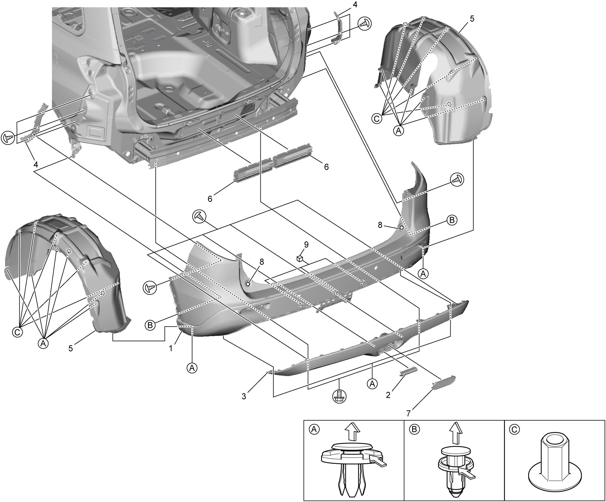

9H
| Rear Bumper Removal and Installation |
Removal
1)Remove rear bumper (1).
2)Remove rear bumper side holder (4).
3)Remove rear fender lining (5).
4)Remove rear bumper lower garnish (3).
5)Remove rear bumper lower center garnish (2) if necessary.
6)Remove rear fog light cover (7) if necessary. (if equipped)
7)Remove outlet ventilator duct (6) if necessary.
8)Remove rear end door side cushion film (8) and rear bumper pad (9) if necessary.


 "Expand image")
Installation
Reverse remove procedure.